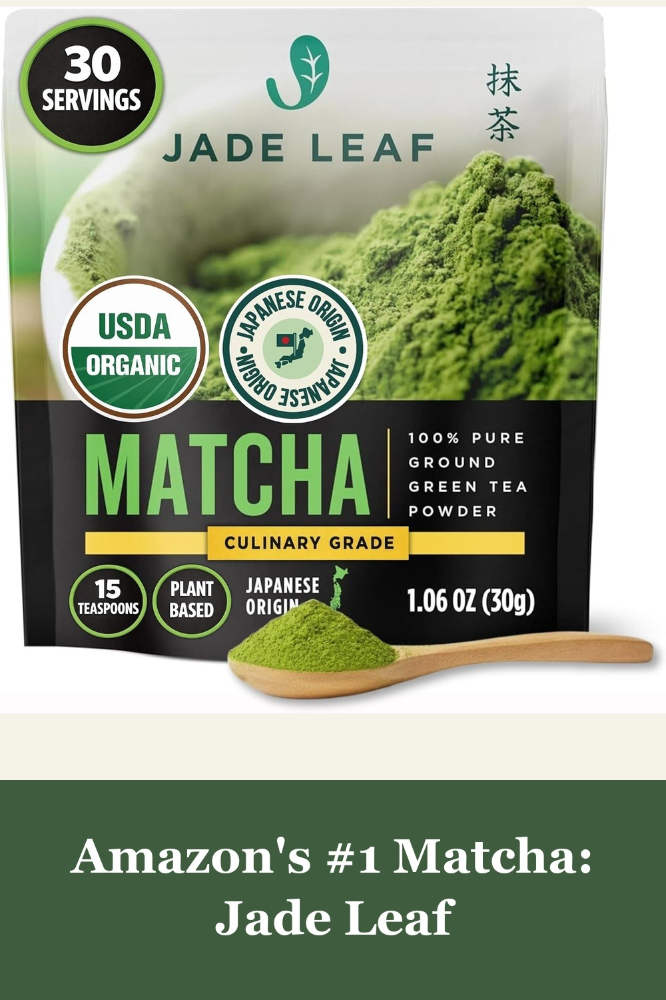
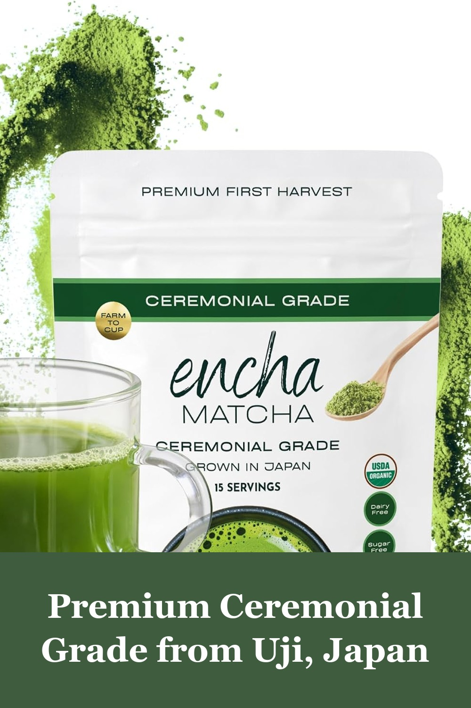
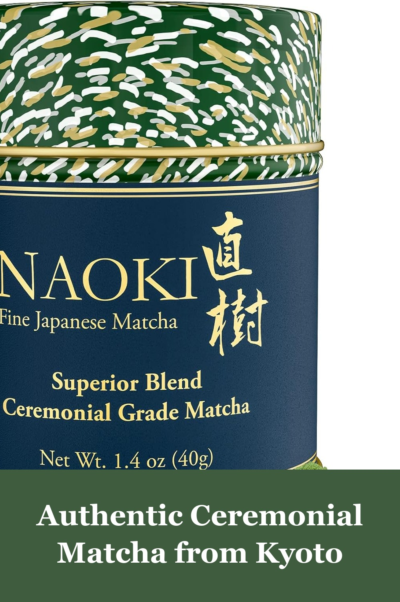
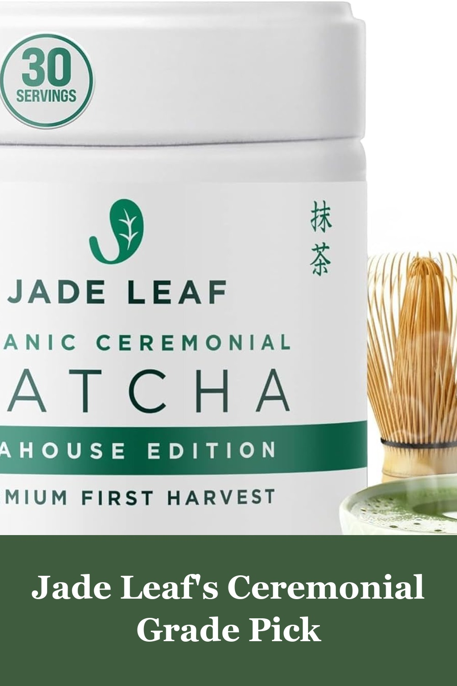

Jade Leaf Matcha Powder, Organic Culinary Grade, 30g / 1.06oz
The best-selling matcha on Amazon, with over 83,000 reviews — organic culinary-grade Japanese green tea powder that's perfect for lattes, baking, and smoothies.
I'm very happy with this organic matcha powder. It has a fresh taste, mixes well with water or milk, and has a smooth texture without clumps. The quality is excellent, and it's perfect for making tea, lattes, or adding to smoothies. A little goes a long way.— verified Amazon buyer
View on Amazon →
Encha Matcha - Ceremonial Grade Matcha Powder, Organic First Harvest, 30g/1.06oz
Encha's organic first-harvest ceremonial matcha comes straight from Uji, Japan — smooth, naturally sweet, and the most-purchased premium matcha on Amazon.
I grew up in Japan, and have drunk green tea and/or matcha all my life. I've tried several brands of matcha, but have been far-and-away happiest with Encha Latte Grade and Encha Ceremonial Grade — which tastes great, and is the best value I've found so far.— verified Amazon buyer
View on Amazon →
Naoki Matcha Superior Blend Matcha, 40g/1.4oz
Naoki blends Uji and Kagoshima ceremonial-grade leaves for a rich, well-rounded matcha — a top pick for anyone building a daily matcha ritual.
This is such a delicious matcha powder. The color is a beautiful, vibrant green and the texture is a perfectly fine powder. It has an earthy, umami flavor that is absolutely incredible. It mixes well in both hot and cold liquids and does not clump up.— verified Amazon buyer
View on Amazon →
Jade Leaf Ceremonial Grade Matcha Powder, 30g / 1.06oz Tin (Teahouse Edition)
The step-up from Jade Leaf's #1 bestseller — this Teahouse Edition ceremonial-grade tin is smoother and more refined, ideal for traditional tea ceremonies or a silkier matcha latte.
I have been purchasing this specific Jade Leaf Matcha for over 4 years now, and I just opened my 12th bag. When you've used a product this consistently, you really get to know its quality, and this matcha has remained remarkably consistent — a vibrant, electric green that whisks into a beautiful froth.— verified Amazon buyer
View on Amazon →